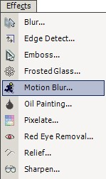

(45 degrees / 10 pixels)
(-135 degrees / 50 pixels)
(-37 degrees / 20 pixels)
Motion Blur Effect
 The Motion Blur Effect (Effects-->Motion Blur) has two modes of operation: Centered and Not Centered. Both of them produce a motion blur effect, but in different directions. The Centered option produces a forward and backward motion effect, while the Not Centered only produces a forward motion blur. Setting either Centered or Not Centered is easily done in the menu box that pops up when you select this effect. You can also select the direction of the blur and the magnitude (in pixels) of the blur. |
An image altered by the Motion Blur Effect:
| |
|
| Original Image | Centered Motion Blur (45 degrees / 10 pixels) |
| Not Centered Motion Blur (-135 degrees / 50 pixels) |
Centered Motion Blur (-37 degrees / 20 pixels) |